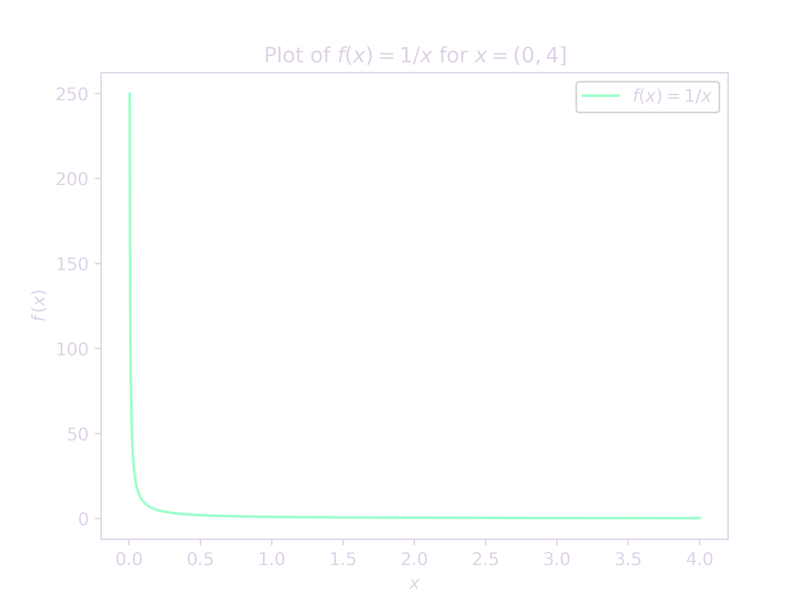
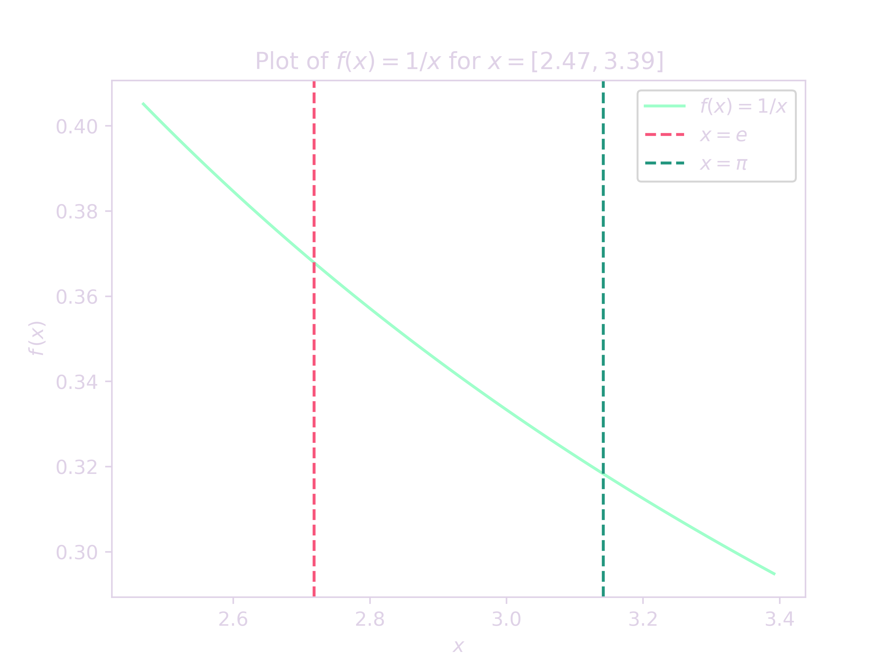
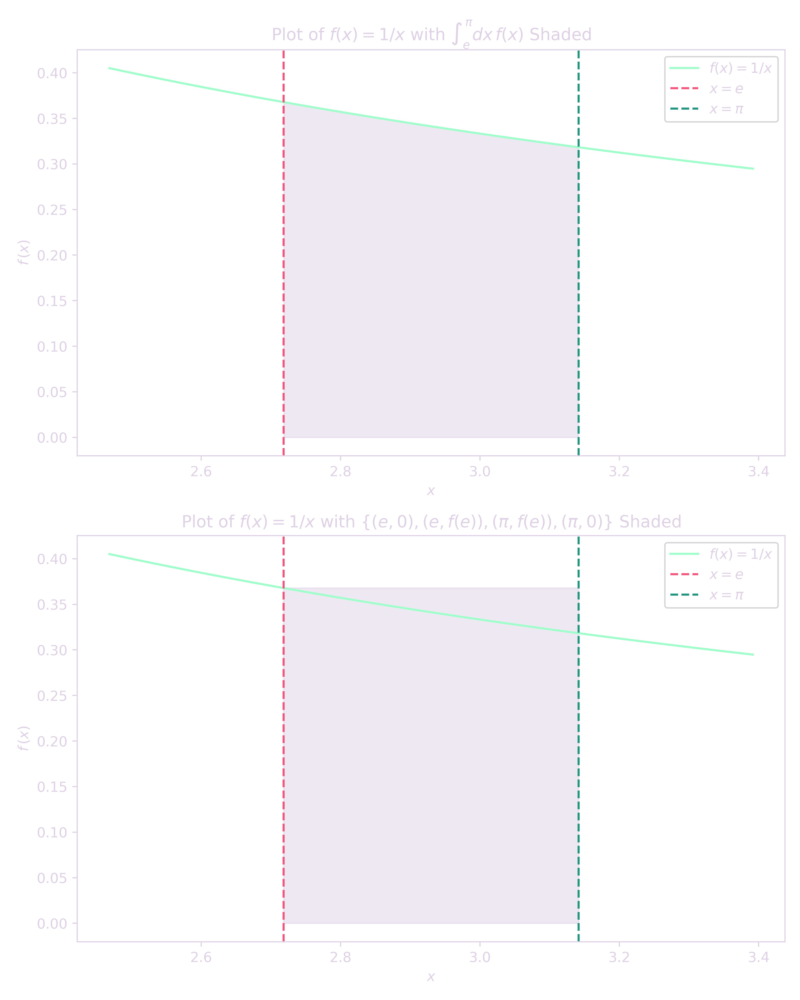

Euler's number, $e$, and pi, $\pi$, are mathematical constants that seem to appear everywhere in physics.
Most of the time when I come across problems like this I don't bother dedicating a ton of time to them as the solution can be found using a simple calculator.
However, this particular problem can be solved using some clever calculus that any freshman in mathematics can do.
It can be easily verified that $e^\pi \approx 23.14$ and $\pi^e \approx 22.46$, so we know that the statement is correct.
However, let us complicate our lives just the tinniest ammount.
Proof. Let $f:\mathbb{R}^+\to\mathbb{R}^+$ be defined by $f(x) = 1/x$ $\forall x\in\text{dom}f$.
Plotting $f(x)$ over some small interval gives a visual of the function:

Figure 1. A plot of $f(x)$ over the interval $x = (0, 4]$.1
Let's zoom in to the values emphasized in the problem, $e$ and $\pi$,

Figure 2. Plot of $f(x)$ over the interval $x=[2.47,3.39]$ with vertical lines at $e$ and $\pi$.1
Consider the integral $$I = \int_e^\pi dx\, f(x)$$ and the rectangle with vertices $\left\{\left(e, 0\right), \left(e, f(e)\right), \left(\pi, f(e)\right), \left(\pi, 0\right)\right\}$, as seen in the figure below.

Figure 3. Two subplots of $f(x)$ showing the different shaded regions.1
Let $A$ be the area bounded by the rectangle.
Clearly, $I < A$.
That is,
\[
\begin{gather*}
I < A \\
\Rightarrow\int_e^\pi dx\, f(x) < f(e)\cdot\left(\pi - e\right) \\
\Rightarrow\left.\ln{x}\right|_e^\pi < \frac{1}{e}\cdot\left(\pi - e\right) \\
\Rightarrow\ln{\pi} < \frac{\pi}{e} \\
\Rightarrow\pi < e^{\pi/e} \\
\Rightarrow\boxed{\pi^e < e^\pi}.
\end{gather*}
\]
[qed]